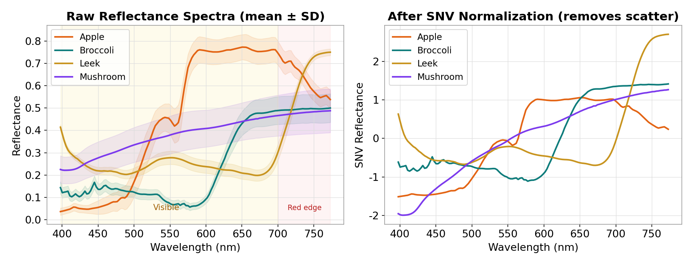
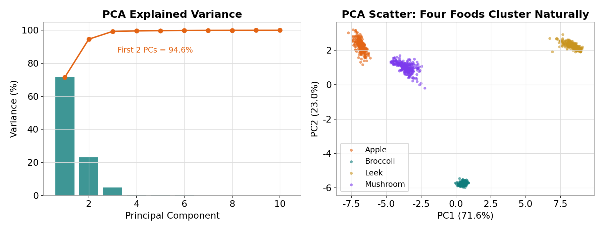
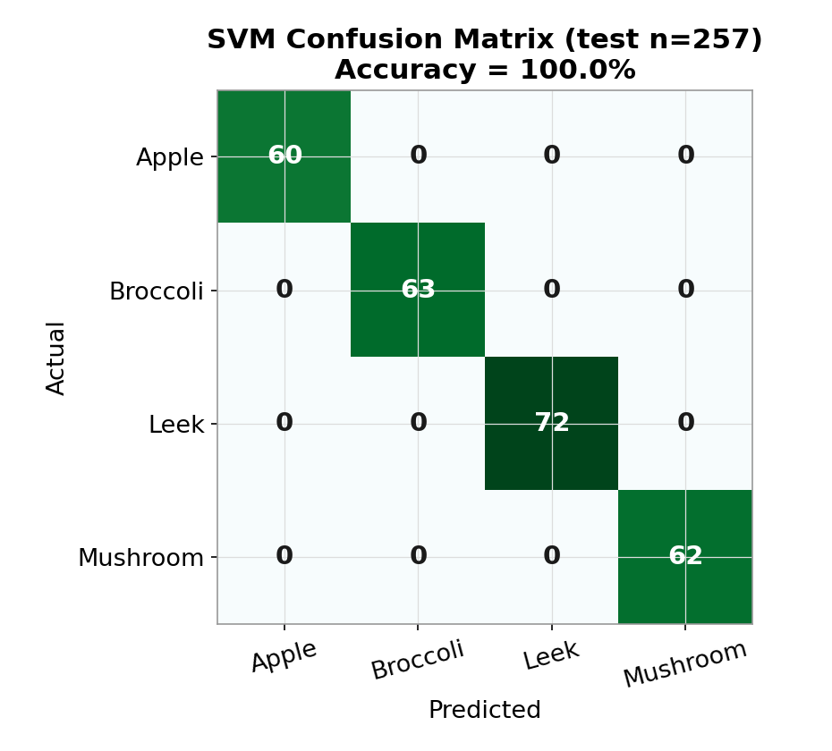
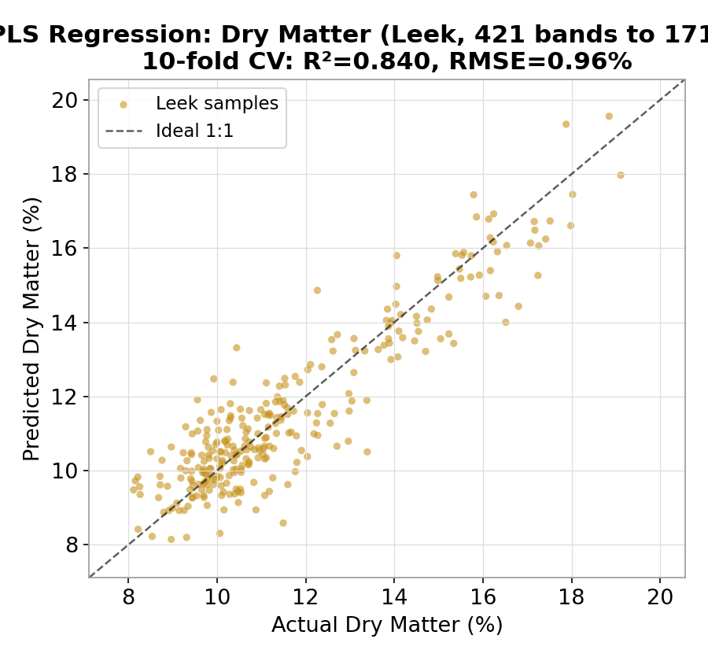

Can a photo tell you how much water or sugar is in food?
A normal photo has only RGB; hyperspectral records hundreds of bands per pixel — seeing chemistry the eye can't.
02/ 9 — The Data Cube
Hyperspectral data = space × space × spectrum
A normal color image stores just 3 numbers per pixel (red, green, blue).
A hyperspectral image is a data cube: two spatial dimensions + a third of hundreds of contiguous bands.
From any pixel you can extract a full spectral curve — the chemical fingerprint of that spot.
03/ 9 — Real Open Dataset
Real dataset: SpectroFood (open, Zenodo)
🍎
Apple
240 samples
🥦
Broccoli
250 samples
🧅
Leek
288 samples
🍄
Mushroom
250 samples
1028 Vis-NIR spectra + dry matter content
⚠️ Lesson one of real data
Different foods measured with different cameras
Different ranges: apple to 773nm, leek to 1717nm
→ Use the 141 Vis bands common to all four (398–773nm) for a fair comparison
Real data is always a bit "dirty" — cleaning it is step one.
04/ 9 — Spectral Fingerprint + Preprocessing
Each food has its own spectral fingerprint

Left: raw reflectance (mean±SD) — each shape is a fingerprint. Right: after SNV (Standard Normal Variate), surface-scatter and distance shifts are removed, revealing true chemical differences.
05/ 9 — Dimensionality Reduction (PCA)
PCA: 141 bands → just 2 is enough

141 bands are highly correlated. After PCA, the first two components capture 94.6% of variance. Plotting PC1 vs PC2, the four foods split into four clusters — before we even classify.
06/ 9 — Classification (SVM)
Classification: 100% accuracy — but what does it mean?

SVM / Random Forest
100%
257 test samples, perfect diagonal, zero misclassification.
⚠️ Don't celebrate: the four foods are so different that 100% means the task was too easy.
The harder, more valuable task is next — quantitative prediction.
07/ 9 — Regression (PLS, the real test)
Regression: predict dry matter from the spectrum

PLS Regression
R²=0.84
Full leek spectrum (NIR to 1717nm), 10-fold CV, RMSE just 0.96%.
"Which food" is easy; "how much" is hard.
NIR senses water and organic absorption — exactly what real food QC relies on.
08/ 9 — Orange Data Mining
Don't want to code? Orange — just connect the dots
Open-source Orange Data Mining + Spectroscopy add-on: connect widgets by mouse — File → Preprocess Spectra → PCA / PLS / classifiers → Test & Score → Confusion Matrix. Same science, zero code.
09/ 9 — Take-away
Hyperspectral
lets you see the chemistry your eyes can't
For full control & flexibility → use Python; for speed, visuals & no code → use Orange. Same science, two paths, your choice.